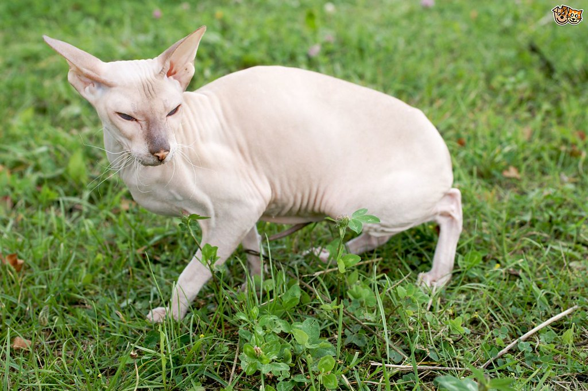

The Peterbald cat can come as a shorthair or as a no hair. They are quite rare, but are very loyal and social. They are very outgoing and friendly and may stick around to look at what people are doing. An interesting thing about these cats is that they have long toes with webbing on their paws which allows them to grab and interact with many different items.
